5.2.2. Криптосистема RSA
5.2.2. Криптосистема RSA
Система Ривеста − Шамира − Адлемана (RSA) является первым полноценным асимметричным алгоритмом, стойкость которого основана на сложности решения задачи разложения больших чисел на простые множители (факторизации). Открытый и закрытый ключ являются функциями двух больших (150−200 и более десятичных разрядов) чисел. Абонент, который является получателем, создает два ключа. Далее открытый ключ публикуется (для шифрования), а второй предназначен для расшифрования.
Алгоритм RSA
Алгоритм RSA состоит из следующих шагов:
1. Получатель выбирает два различных простых числа большого размера p и q, и вычисляет их произведение  . После этого он выбирает случайное число d такое, что 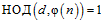, где
. После этого он выбирает случайное число d такое, что 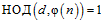, где  – функция Эйлера.
– функция Эйлера.
Функция Эйлера 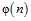 − это мультипликативная функция, возвращающая количество чисел меньше n и взаимно простых с 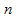.
Функция Эйлера вычисляется следующим образом:
• функция Эйлера от простого числа p равна 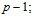
• функция Эйлера от степени простого числа p равна 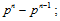
• функция Эйлера от произвольного натурального числа 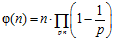 для n>1.
Если  , где p и q − простые числа, то функция Эйлера вычисляется с помощью формулы 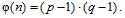
, где p и q − простые числа, то функция Эйлера вычисляется с помощью формулы 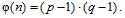
2. Получатель вычисляет с помощью расширенного алгоритма Евклида величину e такую, что 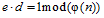 и публикует пару чисел 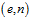, являющиеся открытым ключом. Закрытым ключом будет число d. Числа e и d также являются взаимно простыми, при этом исходные числа больше не нужны, их необходимо уничтожить, но нельзя раскрывать.
3. Отправитель получает открытый ключ получателя и представляет текст для отправки в виде цифровых блоков меньше n и зашифровывает их с помощью функции
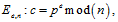
в силу специального выбора чисел d, e это отображение будет взаимно-однозначным и имеющим обратное отображение.
4. Получатель, зная число d , может расшифровать сообщение от отправителя с помощью обратной функции 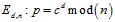.
Если необходимо организовать двухсторонний или многосторонний обмен данными, то каждый абонент генерирует пару ключей и публикует открытый ключ. При этом каждый из них может выступать в роли отправителя для любого абонента и получателя от любого абонента.
Пусть злоумышленник имеет в своем распоряжении все данные, передающиеся по каналу связи − n, e, c. Для взлома алгоритма требуется найти закрытый ключ d. Чтобы его получить надо найти обратное число к функции Эйлера:
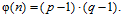
Для того чтобы вычислить функцию Эйлера надо знать p, q, которые можно получить только путем разложения на множители числа  ,что является вычислительно-сложной задачей, выходящей за пределы вычислительных возможностей современной техники [30].
,что является вычислительно-сложной задачей, выходящей за пределы вычислительных возможностей современной техники [30].